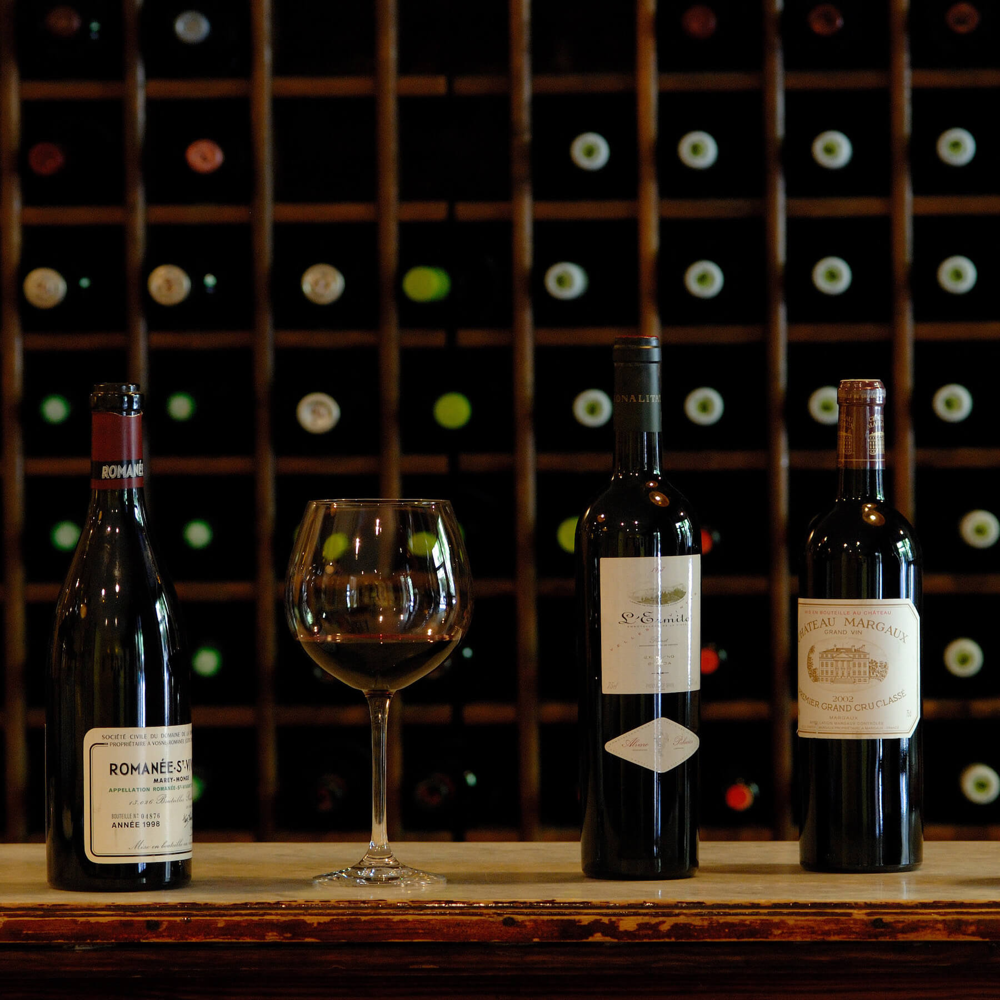
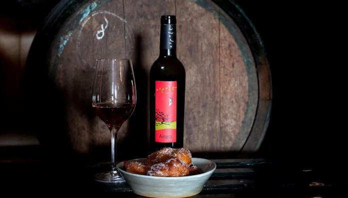
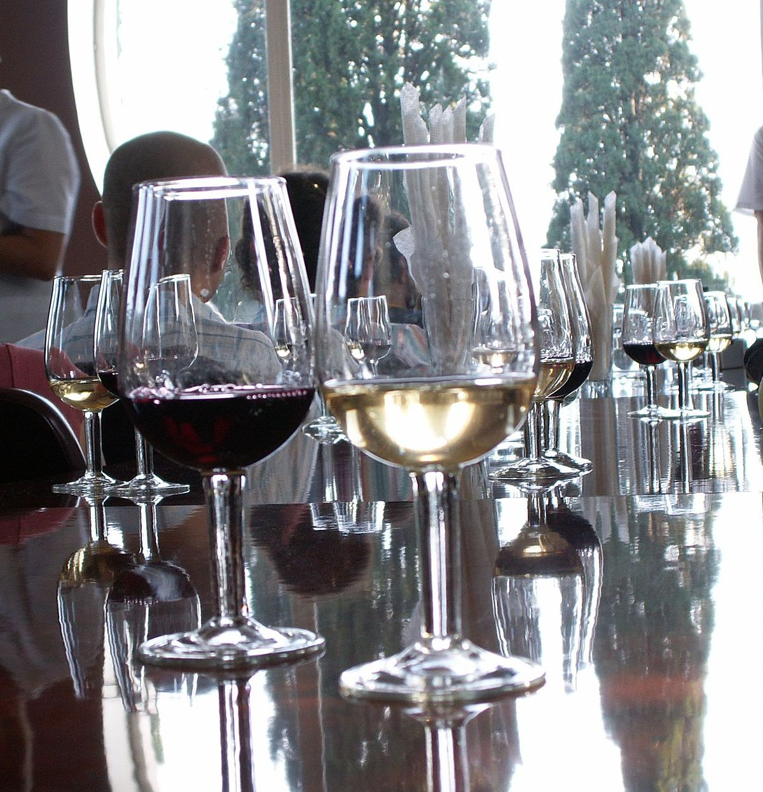
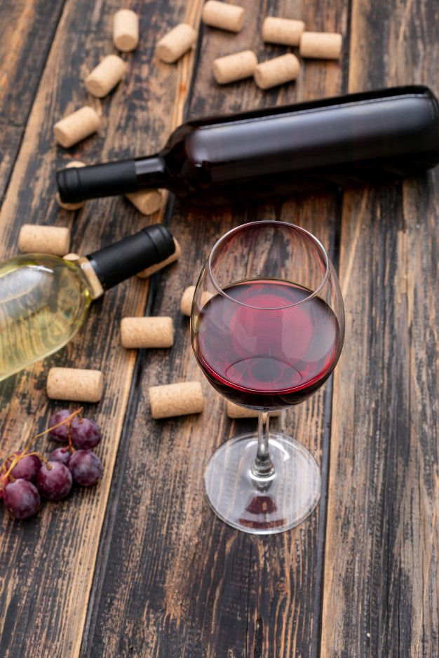
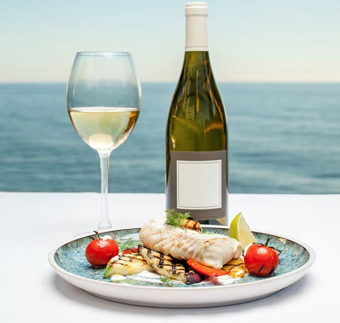

Clasificación de los Vinos según la Cantidad de Azúcar:
Secos:
De 0 a 5 g/l,
Abocados:
De 5.1 a 15 g/l,
Semi - Secos:
De 15.1 a 30 g/l,
Semi - Dulces:
De 30.1 a 50 g/l,
Dulces:
De 50 g/l en adelante,